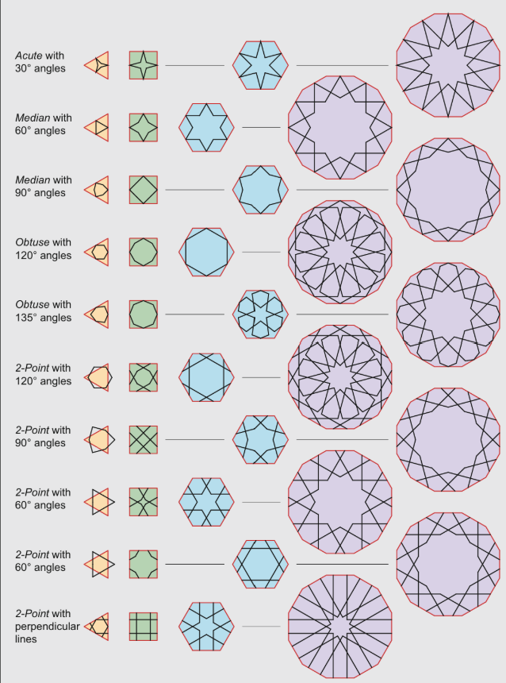
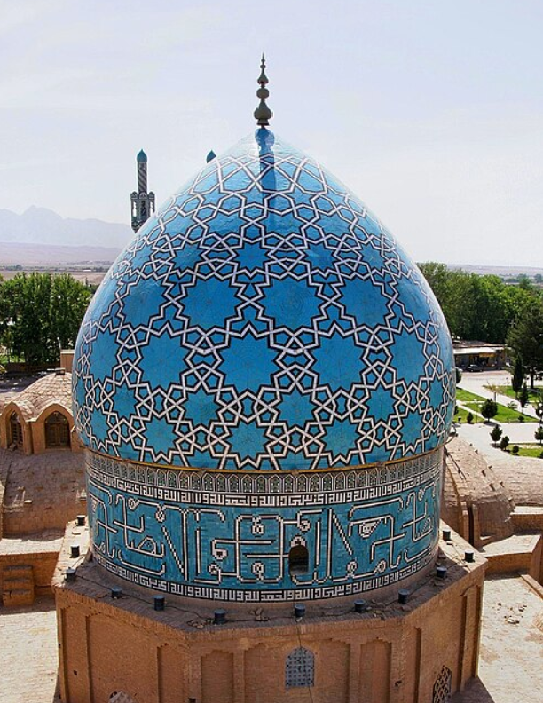
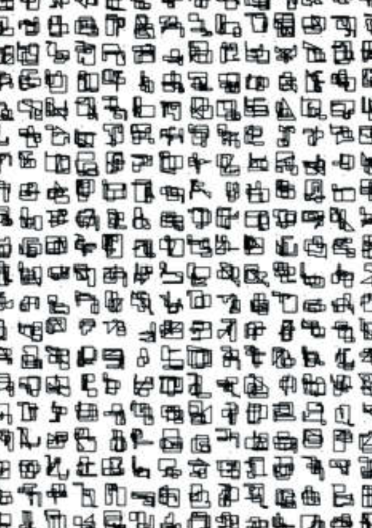
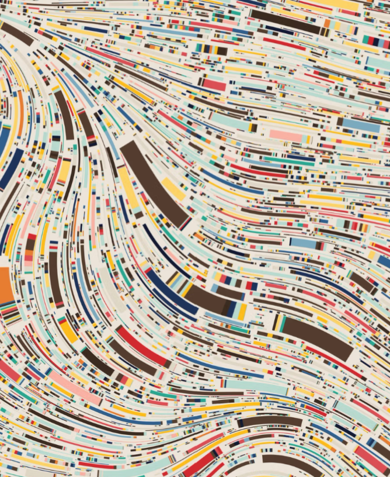
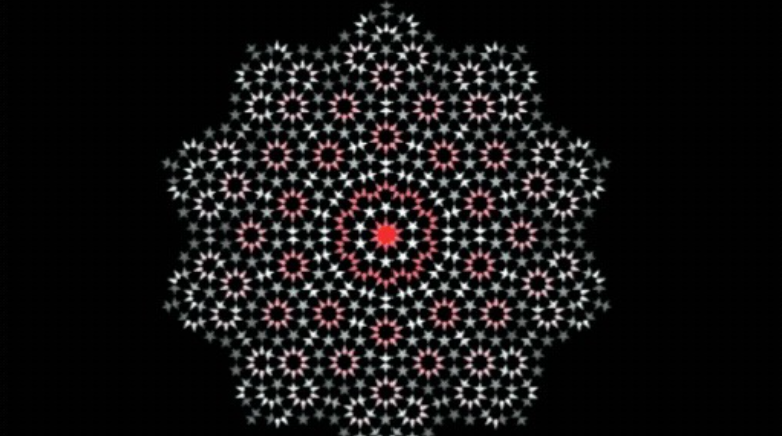
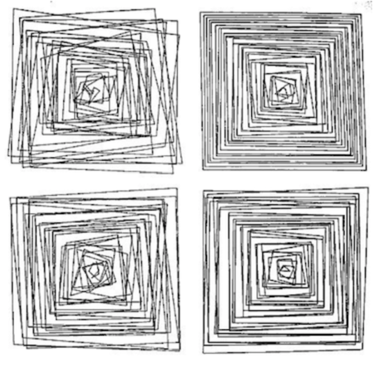

Overview
Abstract
This paper argues that Islamic Geometric Patterns (IGPs) can be understood as a pre-digital algorithm. Drawing on Laura Marks’ concept of enfoldment and infinity, Wilhelm Worringer’s theory of abstraction, and Keith Critchlow’s writing on sacred geometry, it shows how IGPs transform finite geometric rules into complex, infinite patterns.
Through a historical and theoretical comparison, it shows that IGPs and Generative Art (GA) both rely on repetition, symmetry, abstraction, and procedural logic rather than imitation of nature. It also separates generative art from generative AI by stressing artist-defined systems that govern output. Finally, a p5.js prototype translates polygon-based construction methods into code.
Islamic geometric patternsGenerative ArtabstractionaniconismZahir and Batin
Introduction
Through the centuries, artists have discovered that simple rules can generate complex visuals. From the interlocking star patterns of mosques to flowing algorithmic landscapes, IGP and GA share one principle: turning finite mathematical constraints into infinite visual possibility. I argue that IGP is a pre-digital algorithm, in which compass-constructed grids unfold endless patterns, much as modern code generates autonomous ones.
Marks examines the link between Islamic art and computational art in Enfoldment and Infinity. Building on her, I also draw on Worringer’s “urge to abstraction” (1908), which explains why geometric order offers stability amid natural chaos, and on Critchlow, who connects IGP to sacred geometry and reads its avoidance of figures as a way of revealing unity and infinite order.
The paper moves through four parts: the history of IGP, the emergence of GA, a comparative analysis, and a prototype that combines the two. It addresses a gap: GA scholarship overlooks pre-digital precedents, while studies of Islamic art rarely engage modern media theory.
Zahir and Batin
Following Marks, I use two Islamic concepts for what we see and what lies beneath it.
Zahir (ظاهر)The outer, the visible. The surface of the pattern, the image we perceive.
Batin (باطن)The hidden. The mathematical structure, or the code, enfolded inside the surface.
The visible surface of an IGP enfolds a hidden mathematical pattern, just as a GA image unfolds infinite variations from a single algorithmic seed. Try it below: the pattern you see is drawn from the circles and polygons underneath.
Islamic Geometric Patterns
IGPs are a geometric system defined by a continuous network of overlapping stars and polygons, governed by strict symmetry and systematic repetition. They range from simple to multi-level designs, in two or three dimensions (Azari et al. 2023). The primary tools were a straight-edge and a compass (Abdullahi and Embi 2013).
Historical development
IGPs entered the Islamic world in the seventh century, during the expansion of the Islamic empires into Byzantine, Coptic, and Sassanian lands (Bonner 2017). They grew with advances in science and technology across the Middle East, Iran, and Central Asia in the eighth and ninth centuries.
The history is one of simplicity moving toward complexity. Early designs could be made by point-to-point configurations or basic grid tracing, and it is often impossible to know which was used. As complexity rose, the polygon technique emerged in the twelfth century. It has four families: three defined by the angle at which pattern lines intersect (acute, median, obtuse), and a fourth, the two-point family, which places lines on two points of each polygon edge.

Shah Nematollah Vali and the Louvre Abu Dhabi
The dome of the Shah Nematollah Vali Shrine (1431) uses the two-point polygon technique to generate an ascending sequence of 5-, 7-, 9-, 12-, 11-, and 10-pointed stars from a single polygonal grid.
The roof of the Louvre Abu Dhabi carries the logic into the present. Designed by Jean Nouvel, it uses an eight-layer system in which each unit is a star made from a square surrounded by four triangles. Each layer is scaled and rotated differently, producing more than 400,000 geometric intersections (Buro Happold).

Abstraction as method
IGP is an instance of aniconism: art that does not directly represent natural objects. This lines up with Worringer’s “urge to abstraction”, the use of geometry to find calm in a chaotic world. Worringer treats abstraction as a psychological need; in IGP it also works as a practical methodology.
A craftsman with a grid can draw the same pattern on a coin or on a 500-foot dome without losing proportion. The grid is a blueprint that makes complex art repeatable, which is why I read IGP as a system of logic rather than decoration.
Pre-digital algorithm: initial geometric constraints are set, then the pattern expands by mathematical functions rather than continuous artistic intervention. As Galanter (2003) notes, complex visuals can emerge automatically from the systematic repetition of simple units.
Generative Art
Galanter (2003) defines generative art as any practice in which the artist uses a system, such as natural-language rules, a program, or a machine, that runs with some autonomy and contributes to or produces a finished work.
It should not be confused with generative AI. An AI system is not fully under the artist’s control, and the artist does not define the underlying algorithm. A tool like Midjourney takes a short phrase as its request (Parker 2025). This paper is about generative art only.
Generative art is defined by process, not by a visual style (Parker 2025). That is why not all computer-made art counts: an illustration made in Photoshop is digital but has no autonomous, programmable system governing its creation. Randomness and interactivity are allowed, as long as they stay inside the framework the artist defines.
From cybernetics to code
The field grew from cybernetics and general systems theory, which moved artistic creation from the static object to the dynamic process. In the 1960s Roy Ascott called it “a cybernetic vision”, and the early digital computer was suited to executing exact logical instructions (Boden and Edmonds 2009).
In 1965 Georg Nees showed Generative Computergraphik, one of the first formal uses of the term, and Nees and Frieder Nake exhibited computer graphics in Stuttgart the same year. Manfred Mohr began making program-drawn works in 1968 and called them generative art.

Hobbs and Reas
Casey Reas’ Process 18 (2006) uses Processing code to direct thousands of particles by repulsion rules, forming organic networks that evolve in real time. Tyler Hobbs’ Fidenza generates thousands of flowing lines from simple curving algorithms, and its complexity comes from repetition.
Both work mostly with abstract, non-figurative forms, which parallels aniconic approaches in other traditions and leads into the comparison.

Comparative Analysis
IGP and GA come from different periods and origins, yet in both the artist writes a system of rules that governs the outcome (Galanter 2003). Once the rules exist, complexity emerges through repetition, symmetry, and iteration rather than manual work. The work is the product of a procedural logic, not a single fixed result. That positions IGP as a pre-digital algorithm and GA as its computational successor.
Image, Information, Infinite
Marks names three connections between the two traditions.
ImageThe art we perceive.
InformationThe underlying structure: code in GA, mathematical construction in IGP.
The Infinite in GAThe endless possibilities the code can generate.
The Infinite in IGPRooted in the infinite knowledge and power of God.
Unfolding and enfolding
For Marks, unfolding is how an artwork reveals its structure as we engage with it. Enfolding is how information stays hidden inside the work and forms the visible surface. Surface, image, and information belong to the Zahir; hidden potential, infinity, and deeper interpretation belong to the Batin.
Zarah Hussain’s Geometric Light carries IGP principles into algorithms, animation, and programmable light. The visuals are the Zahir and the code is the Batin, and the output is performative: it unfolds slowly over time. Nees and Nake’s plotter drawings work the same way, since the final result cannot be known in advance. Hamid Naderi Yeganeh’s trigonometric patterns grow and shift as the algorithm runs, and never repeat.

Critchlow argues that every Islamic pattern begins with a single compass point. From it comes a circle, and from the circle a square, triangle, or hexagon. Marks reads that point as the Infinite: from unity arises infinity. In GA the point is the seed, and a single line of code can grow a forest of digital trees. In the mihrab of the Sultan Hassan Mosque, interlocking shapes refuse to end at the border and seem to continue into an unseen field.

John Simon’s web work Unfolding Object (2002) shows the same relation: pages unfold as users click, and creases mark pages previous users have opened, while others stay enfolded and out of sight.
Aniconism
For Critchlow, IGP avoids figures because geometry can express unity, harmony, and the infinite order of creation without images of people or animals. Aniconism is not only a refusal of images, but a way of revealing a higher order through pattern and proportion. GA reaches aniconism more naturally: Hobbs’ Fidenza is curves and lines, and Vera Molnár’s permutations are squares and lines.
The cultural gap
The two differ in what grounds them. IGP is built with precision and rooted in tawhid, the unity of God, where repetition and symmetry stand for an infinite unified order. GA comes from twentieth-century computing, cybernetics, and systems theory, and cares mainly about process, experimentation, and system behavior.
Can the gap be bridged, with technology and spiritual experience in constructive interplay? Contemporary artists like Hussain are doing it by pairing IGP’s symbolic depth with GA’s technical capacity.
Prototype
To test the argument, I built a p5.js sketch that recreates the twelfth-century polygon technique as performative art. It implements a two-point family construction, where lines connect at equidistant points along polygon edges. Layered star polygons (10-, 12-, and 14-point) morph between acute, median, and obtuse layouts across six rotating levels, like the layers of the Louvre Abu Dhabi dome.
drawStarPattern() draws intersection lines at 33% and 67%
along each edge, following Bonner. Trails, morphing, and rotation mean
no frame repeats. The unity at the algorithm’s center, the Batin,
keeps surfacing as pattern, the Zahir. The sketch lays the groundwork
for Capstone 2.
Conclusion
IGP and GA emerged in very different periods and look different, yet both put process before result. In both, the artist sets a system of rules that governs the outcome. The analysis shows that they are structurally similar, not only visually: IGP grew from simple grids to the polygon technique and its four families, and GA extends that logic computationally, with artist-defined algorithms producing autonomous complexity, as in the work of Hobbs and Reas.
Worringer’s urge to abstraction explains the psychological pull of both. Critchlow gives aniconism a positive meaning as a principle of sacred geometry. Marks’ unfolding and enfolding show how the Batin and the Zahir are held together in both traditions.
Generative thinking predates digital technology. This widens GA’s genealogy beyond 1960s cybernetics to include Islamic mathematical traditions, and it makes IGP a living method for contemporary design. Whether traced with a compass or rendered in code, procedural abstraction shows that simple geometric rules hold infinite creative possibility.
References
- Abdullahi, Yahya, and Mohamed Rashid Bin Embi. “Evolution of Islamic Geometric Patterns.” Frontiers of Architectural Research 2, no. 2 (2013): 243–251.
- Azari, Ranjbar, et al. “Application-Based Principles of Islamic Geometric Patterns.” Heritage Science 11 (2023), article 22.
- Boden, Margaret A., and Ernest A. Edmonds. “What Is Generative Art?” Digital Creativity 20, no. 1–2 (2009): 21–46.
- Bonner, Jay. Islamic Geometric Patterns. New York: Springer, 2017.
- Buro Happold. “Louvre Abu Dhabi: Dome.”
- Critchlow, Keith. Islamic Patterns: An Analytical and Cosmological Approach. London: Thames and Hudson, 1976.
- Galanter, Philip. “What Is Generative Art?” Generative Art 2003, Milan.
- Hobbs, Tyler. “Fidenza.”
- Lu, Peter J., et al. “Decagonal and Quasi-Crystalline Tilings in Medieval Islamic Architecture.” Science 315 (2007): 1106–10.
- Marks, Laura U. Enfoldment and Infinity: An Islamic Genealogy of New Media Art. MIT Press, 2011.
- Parker, J. Generative Art and Computer Vision. Apress, 2025.
- Simon Jr., John F. “Unfolding Object.” Guggenheim Museum, 2002.
- Worringer, Wilhelm. Abstraction and Empathy. Ivan R. Dee, 1997.
With thanks to my advisor, Professor Laura Tripaldi, and to my family for their love, prayers, and encouragement.